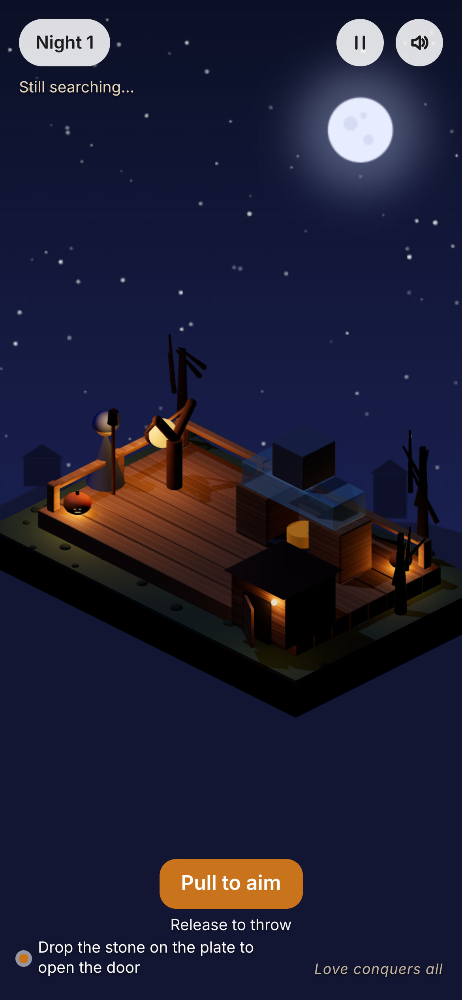
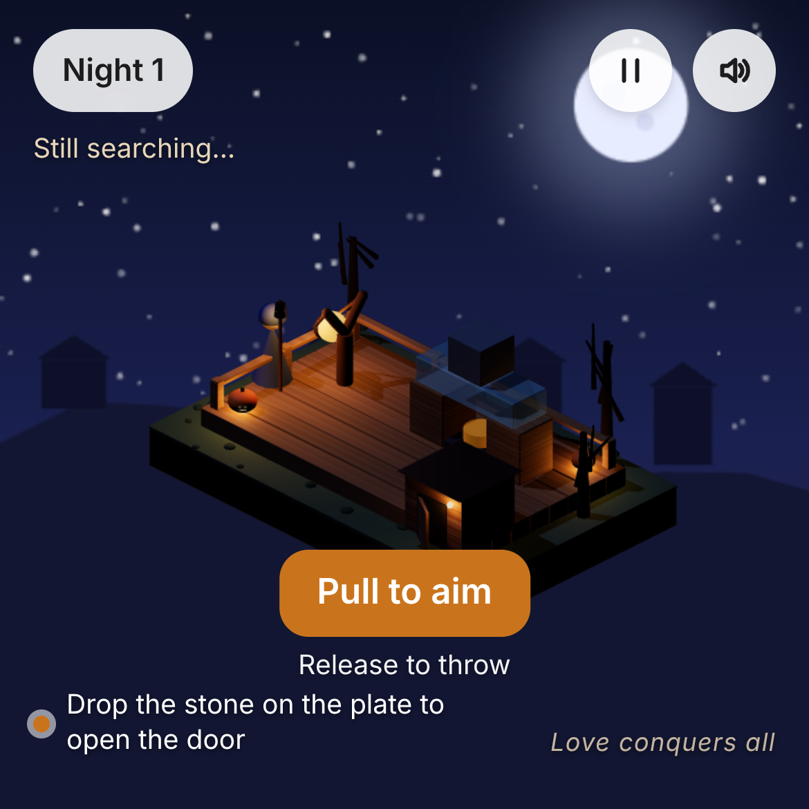
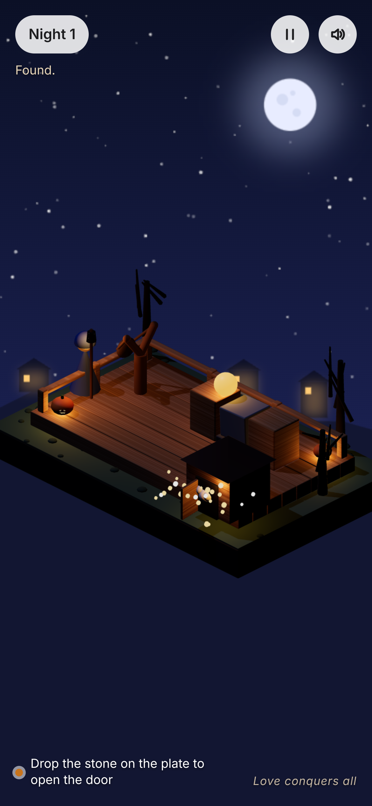

1단계 기록 — 주제 전 정지 화면 A·B (2026-11-01, 통과)
사용자 "응 아 너무좋아졌어" → B(3D)로 2단계 진행. 같은 좌표·광원·HUD 로 두 안을 비교했던 기록.


왼쪽 B(three.js + CC0 모델) / 오른쪽 A(Canvas 2.5D 규칙 렌더). 세로판: B · A. 캐릭터 4상태 시트: B · A.
2단계 코어 테스트(2026-11-01). 핼러윈 밤, 등불 든 목자가 잃은 양 한 마리를 찾는다. 빗나가도 끝나지 않는다 — 장면이 바뀌고 계속 찾는다.
▶ 플레이 — Night 1·2·3 (약 1분)
목자와 등불(왼쪽) · 던지는 빛 · 유리 다리 위의 돌 · 받침판 · 문이 반쯤 열린 오두막에서 내다보는 양 · 호박 등. 광원: 달빛 1개(그림자) + 따뜻한 등불.


왼쪽 1:1 · 오른쪽 "Found. Always." 순간 — 문이 열리고 양이 나오고 마을 창문에 불이 켜진다.
사용자 "응 아 너무좋아졌어" → B(3D)로 2단계 진행. 같은 좌표·광원·HUD 로 두 안을 비교했던 기록.
왼쪽 B(three.js + CC0 모델) / 오른쪽 A(Canvas 2.5D 규칙 렌더). 세로판: B · A. 캐릭터 4상태 시트: B · A.
출처·라이선스: CREDITS.md. 검증 로봇 결과·이어받기: board/knock-chain.md.